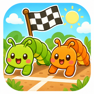
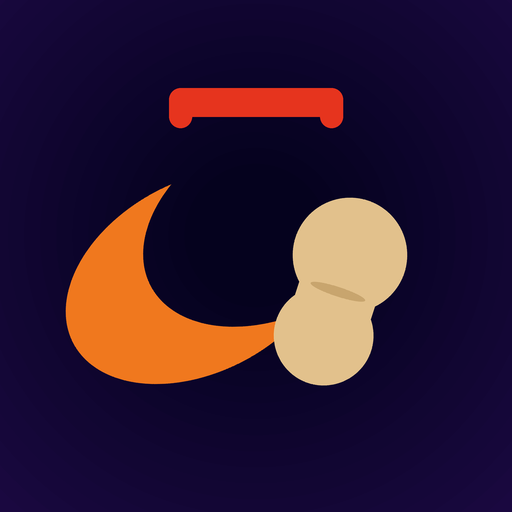
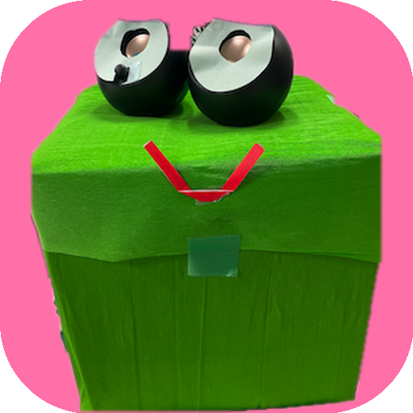

🎮 ミニゲーム集
あそびたいゲームをえらんでね！

ゆびシャクトリ レース
カメラに手をうつして、人差し指を「曲げて→伸ばす」とシャクトリムシが進むよ！CPU対戦・ふたり対戦もできる！

ふたりで協力！柿ピー玉入れ
顔の上に出るバーを、あたまの傾きで操作！落ちてくる柿ピーを跳ね返して、ふたりでカゴをねらおう。1人でも遊べるよ！

ケロジャンプ！
顔を縦にピョコッと動かしてジャンプ！トゲを避けて進む横スクロールアクション。ひとり・ふたり対戦対応。